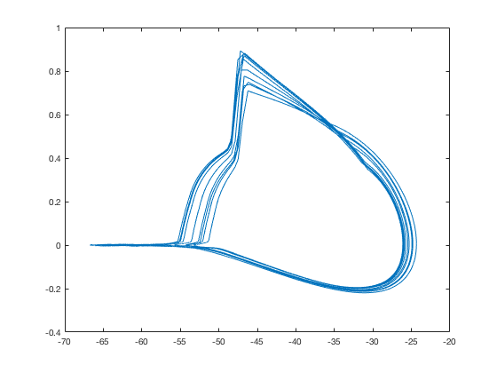

This is the readme for the model associated with the paper: Oz P, Huang M, Wolf F (2015) Action potential initiation in a multi-compartmental model with cooperatively gating Na channels in the axon initial segment. J Comput Neurosci 39:63-75 This model was contributed by Pinar Oz. The model has been verified to run on ubuntu 16.04 and Mac OS 10.11.6 Usage: ------ The model can be compiled with a command like g++ multicomp.cpp neuron.cpp WB.cpp -o exe and then run with a command like ./exe Phase plots can be displayed in MATLAB with commands like: load filepath3_MP.dat a=filepath3_MP; dvdt=diff(a); figure f=5 plot(a(2:end,f),dvdt(:,f)) figure f=7 plot(a(2:end,f),dvdt(:,f)) 